FunkLoad bench report
| Date: | 2014-12-13 01:26:00 |
|---|
Abstract
Testing the critical path of the lab app Bench result of Critical.view_stuff: No test description
Table of contents
- 1 Bench configuration
- 2 Bench content
- 3 Test stats
- 4 Page stats
- 5 Request stats
- 6 Slowest requests
- 7 Page detail stats
- 7.1 PAGE 001: View the upcoming page
- 7.2 PAGE 002: View the index page
- 7.3 PAGE 003: View the user signup page
- 7.4 PAGE 004: Create New User
- 7.5 PAGE 005: view party page
- 7.6 PAGE 006: Create New party
- 7.7 PAGE 007: Inviting user
- 7.8 PAGE 008: Inviting user
- 7.9 PAGE 009: Inviting user
- 7.10 PAGE 010: View index page
- 7.11 PAGE 011: Asking to join
- 7.12 PAGE 012: Asking to join
- 7.13 PAGE 013: Asking to join
- 8 Failures and Errors
- 9 Definitions
1 Bench configuration
- Launched: 2014-12-13 01:26:00
- From: ip-172-31-13-231
- Test: test_critical.py Critical.view_stuff
- Target server: http://ec2-54-148-47-17.us-west-2.compute.amazonaws.com/
- Cycles of concurrent users: [100, 200, 300, 400, 500]
- Cycle duration: 120s
- Sleeptime between request: from 0.0s to 0.5s
- Sleeptime between test case: 0.01s
- Startup delay between thread: 0.01s
- Apdex: 1.5
- FunkLoad version: 1.16.1
2 Bench content
The test Critical.view_stuff contains:
- 13 page(s)
- 8 redirect(s)
- 2 link(s)
- 0 image(s)
- 0 XML RPC call(s)
The bench contains:
- 11558 tests, 11243 error(s)
- 40785 pages, 11388 error(s)
- 51279 requests, 11388 error(s)
3 Test stats
The number of Successful Tests Per Second (STPS) over Concurrent Users (CUs).
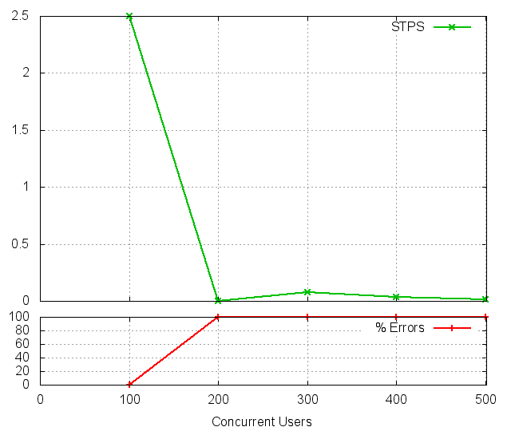
CUs STPS TOTAL SUCCESS ERROR 100 2.500 300 300 0.00% 200 0.000 4404 0 100.00% 300 0.075 2304 9 99.61% 400 0.033 2072 4 99.81% 500 0.017 2478 2 99.92%
4 Page stats
The number of Successful Pages Per Second (SPPS) over Concurrent Users (CUs). Note that an XML RPC call count like a page.
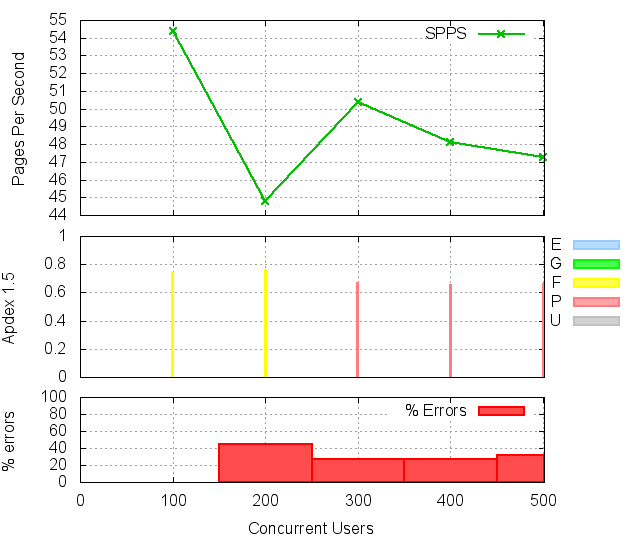 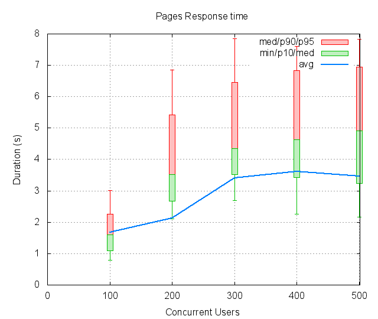
CUs Apdex* Rating SPPS maxSPPS TOTAL SUCCESS ERROR MIN AVG MAX P10 MED P90 P95 100 0.741 FAIR 54.392 93.000 6527 6527 0.00% 0.797 1.674 4.341 1.099 1.595 2.254 3.010 200 0.761 FAIR 44.767 84.000 9776 5372 45.05% 2.117 2.130 8.399 2.682 3.518 5.420 6.858 300 0.668 POOR 50.383 82.000 8339 6046 27.50% 2.699 3.398 9.772 3.518 4.351 6.455 7.857 400 0.655 POOR 48.133 75.000 7864 5776 26.55% 2.262 3.607 9.743 3.432 4.634 6.833 7.596 500 0.657 POOR 47.300 76.000 8279 5676 31.44% 2.159 3.457 10.793 3.232 4.912 6.939 7.823 * Apdex 1.5
5 Request stats
The number of Requests Per Second (RPS) successful or not over Concurrent Users (CUs).
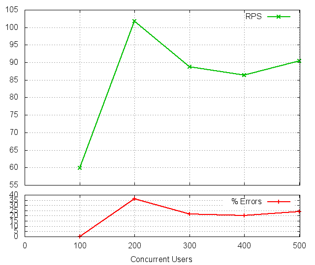_files/requests.png)
CUs Apdex* Rating* RPS maxRPS TOTAL SUCCESS ERROR MIN AVG MAX P10 MED P90 P95 100 0.742 FAIR 59.958 93.000 7195 7195 0.00% 0.011 1.519 4.341 1.018 1.517 2.024 2.257 200 0.761 FAIR 101.783 213.000 12214 7810 36.06% 0.140 1.789 5.866 0.202 1.357 3.749 4.095 300 0.669 POOR 88.733 160.000 10648 8355 21.53% 0.181 2.760 7.216 0.420 3.396 4.720 5.122 400 0.656 POOR 86.425 167.000 10371 8283 20.13% 0.187 2.861 7.785 0.396 3.206 5.286 5.819 500 0.657 POOR 90.425 181.000 10851 8248 23.99% 0.175 2.785 8.905 0.321 2.786 5.685 6.374 * Apdex 1.5
6 Slowest requests
The 5 slowest average response time during the best cycle with 100 CUs:
- In page 004, Apdex rating: POOR, avg response time: 2.16s, post: //users Create New User
- In page 013, Apdex rating: POOR, avg response time: 1.92s, get: /parties ``
- In page 012, Apdex rating: POOR, avg response time: 1.88s, get: /parties ``
- In page 004, Apdex rating: POOR, avg response time: 1.85s, get: /profiles/5514 ``
- In page 011, Apdex rating: POOR, avg response time: 1.84s, get: /parties ``
7 Page detail stats
7.1 PAGE 001: View the upcoming page
Req: 001, get, url //upcoming
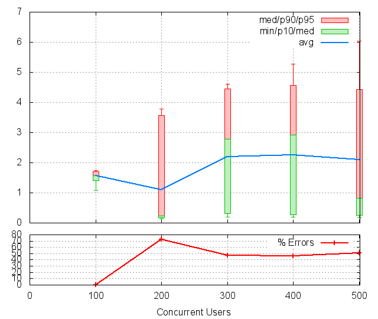
CUs Apdex* Rating TOTAL SUCCESS ERROR MIN AVG MAX P10 MED P90 P95 100 0.641 POOR 327 327 0.00% 1.077 1.559 2.180 1.419 1.560 1.699 1.742 200 0.863 Good 4430 1214 72.60% 0.140 1.094 4.379 0.183 0.239 3.564 3.787 300 0.735 FAIR 2326 1235 46.90% 0.192 2.193 5.198 0.309 2.788 4.447 4.605 400 0.732 FAIR 2185 1169 46.50% 0.194 2.261 6.107 0.275 2.921 4.565 5.280 500 0.727 FAIR 2497 1233 50.62% 0.175 2.094 7.029 0.253 0.830 4.432 6.041 * Apdex 1.5
Req: 002, link, url /bootstrap/3.2.0/css/bootstrap.min.css
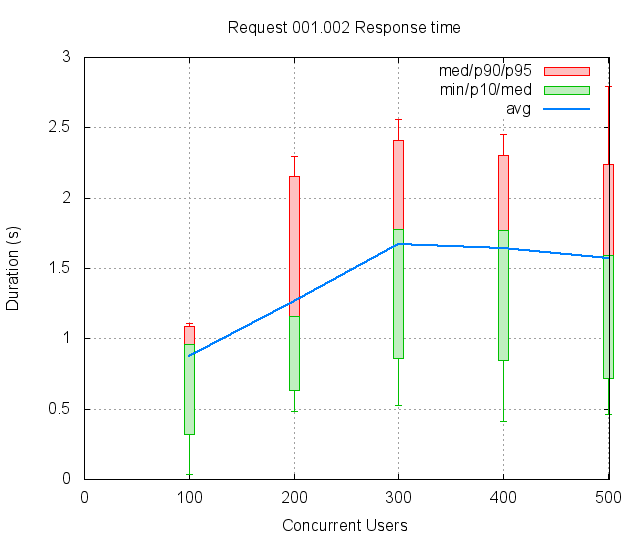
CUs Apdex* Rating TOTAL SUCCESS ERROR MIN AVG MAX P10 MED P90 P95 100 1.000 Excellent 333 333 0.00% 0.037 0.878 1.208 0.322 0.961 1.087 1.113 200 0.853 Good 1222 1222 0.00% 0.484 1.266 2.710 0.631 1.162 2.154 2.294 300 0.703 FAIR 1175 1175 0.00% 0.524 1.670 3.270 0.864 1.777 2.413 2.562 400 0.673 POOR 1233 1233 0.00% 0.411 1.643 2.761 0.846 1.767 2.300 2.454 500 0.708 FAIR 1274 1274 0.00% 0.464 1.569 3.203 0.715 1.592 2.243 2.795 * Apdex 1.5
Req: 003, link, url /assets/application-61c7d55e81567830684b7378699345b0.css
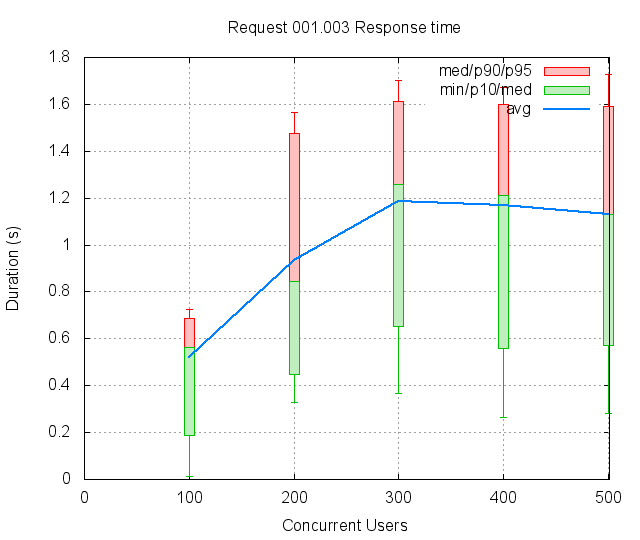
CUs Apdex* Rating TOTAL SUCCESS ERROR MIN AVG MAX P10 MED P90 P95 100 1.000 Excellent 335 335 0.00% 0.011 0.519 0.841 0.186 0.564 0.689 0.724 200 0.961 Excellent 1216 1216 0.00% 0.326 0.933 1.909 0.449 0.842 1.476 1.565 300 0.904 Good 1134 1134 0.00% 0.367 1.186 1.970 0.654 1.260 1.610 1.704 400 0.914 Good 1274 1274 0.00% 0.263 1.169 2.046 0.560 1.211 1.599 1.672 500 0.918 Good 1298 1298 0.00% 0.280 1.132 2.187 0.570 1.131 1.589 1.729 * Apdex 1.5
7.2 PAGE 002: View the index page
Req: 001, get, url //index
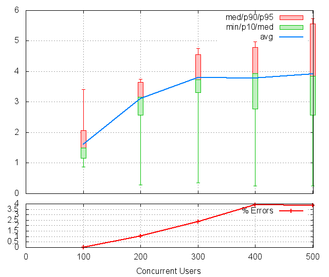
CUs Apdex* Rating TOTAL SUCCESS ERROR MIN AVG MAX P10 MED P90 P95 100 0.752 FAIR 359 359 0.00% 0.869 1.621 3.515 1.156 1.494 2.074 3.419 200 0.505 POOR 1169 1157 1.03% 0.293 3.112 4.144 2.566 3.153 3.652 3.740 300 0.512 POOR 1055 1030 2.37% 0.360 3.791 5.527 3.316 3.738 4.549 4.751 400 0.520 POOR 1329 1277 3.91% 0.258 3.781 5.493 2.769 3.931 4.789 4.974 500 0.515 POOR 1317 1266 3.87% 0.246 3.920 6.437 2.564 3.857 5.564 5.739 * Apdex 1.5
7.3 PAGE 003: View the user signup page
Req: 001, get, url //users/sign_up
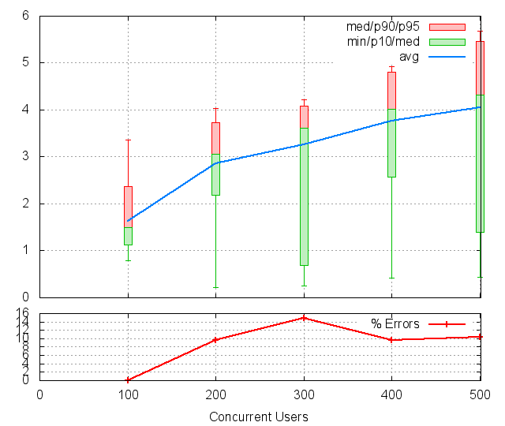
CUs Apdex* Rating TOTAL SUCCESS ERROR MIN AVG MAX P10 MED P90 P95 100 0.754 FAIR 364 364 0.00% 0.797 1.637 3.523 1.128 1.494 2.371 3.367 200 0.548 POOR 1114 1007 9.61% 0.214 2.854 4.406 2.192 3.057 3.729 4.029 300 0.574 POOR 1028 876 14.79% 0.250 3.254 4.916 0.688 3.617 4.082 4.217 400 0.548 POOR 1194 1080 9.55% 0.416 3.762 5.732 2.569 4.025 4.803 4.924 500 0.549 POOR 1269 1137 10.40% 0.435 4.053 6.346 1.388 4.318 5.460 5.683 * Apdex 1.5
7.4 PAGE 004: Create New User
Req: 001, post, url //users
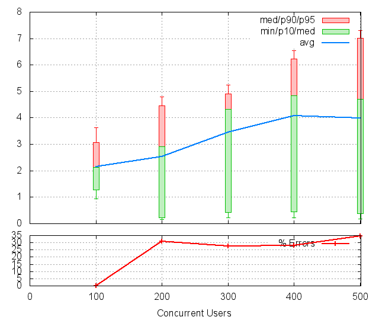
CUs Apdex* Rating TOTAL SUCCESS ERROR MIN AVG MAX P10 MED P90 P95 100 0.581 POOR 347 347 0.00% 0.942 2.161 4.341 1.281 2.118 3.063 3.639 200 0.655 POOR 1031 711 31.04% 0.148 2.533 5.866 0.219 2.915 4.454 4.793 300 0.630 POOR 941 682 27.52% 0.227 3.442 6.629 0.419 4.327 4.909 5.243 400 0.551 POOR 985 711 27.82% 0.229 4.077 7.785 0.440 4.836 6.236 6.552 500 0.514 POOR 1144 749 34.53% 0.185 3.999 8.905 0.372 4.712 7.020 7.295 * Apdex 1.5
Req: 002, get, url /profiles/5514
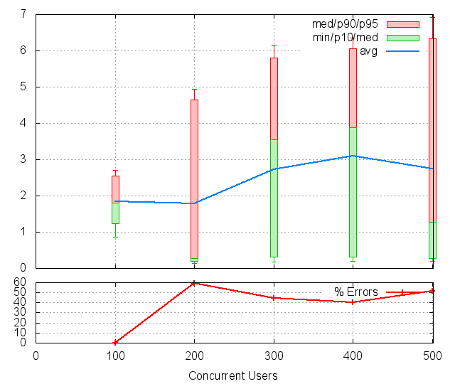
CUs Apdex* Rating TOTAL SUCCESS ERROR MIN AVG MAX P10 MED P90 P95 100 0.630 POOR 324 324 0.00% 0.856 1.852 3.490 1.239 1.798 2.552 2.700 200 0.798 FAIR 725 293 59.59% 0.145 1.786 5.794 0.189 0.267 4.652 4.940 300 0.688 POOR 692 385 44.36% 0.181 2.723 7.216 0.317 3.549 5.807 6.148 400 0.647 POOR 686 410 40.23% 0.187 3.100 7.694 0.322 3.875 6.064 6.360 500 0.694 POOR 765 373 51.24% 0.188 2.739 8.794 0.277 1.284 6.333 6.913 * Apdex 1.5
7.5 PAGE 005: view party page
Req: 001, get, url //new
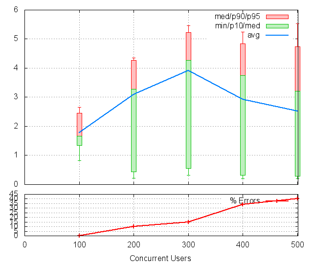
CUs Apdex* Rating TOTAL SUCCESS ERROR MIN AVG MAX P10 MED P90 P95 100 0.670 POOR 305 305 0.00% 0.817 1.778 2.973 1.342 1.669 2.448 2.659 200 0.551 POOR 295 265 10.17% 0.222 3.088 4.791 0.441 3.281 4.266 4.357 300 0.573 POOR 399 340 14.79% 0.313 3.909 6.032 0.558 4.267 5.234 5.468 400 0.668 POOR 414 274 33.82% 0.195 2.918 6.061 0.324 3.751 4.843 5.242 500 0.689 POOR 376 225 40.16% 0.196 2.524 6.721 0.278 3.213 4.739 5.529 * Apdex 1.5
7.6 PAGE 006: Create New party
Req: 001, post, url //parties
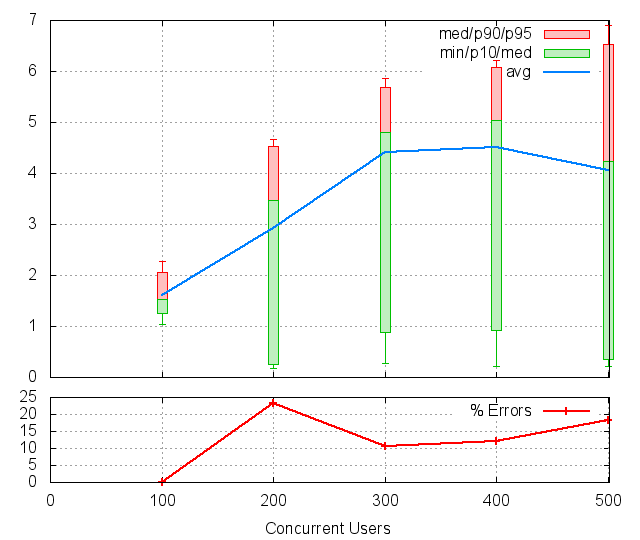
CUs Apdex* Rating TOTAL SUCCESS ERROR MIN AVG MAX P10 MED P90 P95 100 0.718 FAIR 301 301 0.00% 1.034 1.616 2.736 1.255 1.528 2.056 2.267 200 0.616 POOR 267 205 23.22% 0.178 2.928 5.064 0.245 3.464 4.528 4.660 300 0.541 POOR 351 314 10.54% 0.282 4.414 6.577 0.887 4.795 5.682 5.862 400 0.504 POOR 274 241 12.04% 0.208 4.511 6.695 0.925 5.040 6.080 6.210 500 0.514 POOR 210 172 18.10% 0.209 4.059 7.317 0.358 4.230 6.521 6.893 * Apdex 1.5
Req: 002, get, url /parties/8177
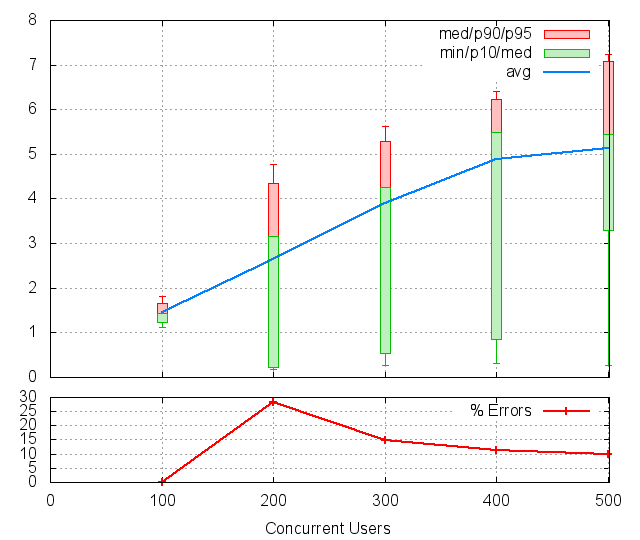
CUs Apdex* Rating TOTAL SUCCESS ERROR MIN AVG MAX P10 MED P90 P95 100 0.817 FAIR 300 300 0.00% 1.121 1.446 2.580 1.229 1.439 1.662 1.823 200 0.642 POOR 219 157 28.31% 0.179 2.634 5.364 0.232 3.169 4.348 4.771 300 0.564 POOR 334 284 14.97% 0.267 3.904 6.414 0.541 4.263 5.282 5.622 400 0.463 UNACCEPTABLE 228 202 11.40% 0.320 4.892 6.973 0.847 5.488 6.219 6.417 500 0.339 UNACCEPTABLE 174 157 9.77% 0.259 5.123 8.209 3.301 5.454 7.086 7.227 * Apdex 1.5
7.7 PAGE 007: Inviting user
Req: 001, post, url //createasinvite
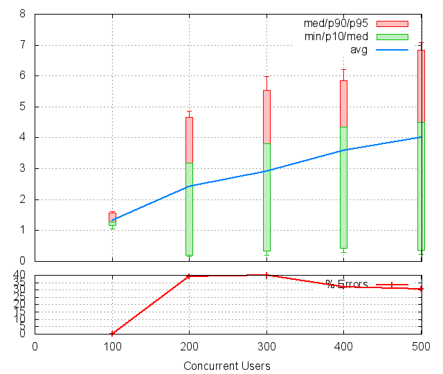
CUs Apdex* Rating TOTAL SUCCESS ERROR MIN AVG MAX P10 MED P90 P95 100 0.913 Good 300 300 0.00% 1.052 1.318 1.971 1.170 1.272 1.559 1.612 200 0.696 POOR 166 101 39.16% 0.147 2.417 5.525 0.204 3.180 4.662 4.870 300 0.676 POOR 296 178 39.86% 0.204 2.921 6.835 0.339 3.809 5.530 5.983 400 0.621 POOR 173 118 31.79% 0.283 3.583 6.721 0.427 4.345 5.839 6.209 500 0.524 POOR 167 116 30.54% 0.227 4.006 8.089 0.363 4.495 6.844 7.078 * Apdex 1.5
Req: 002, get, url /parties/8177
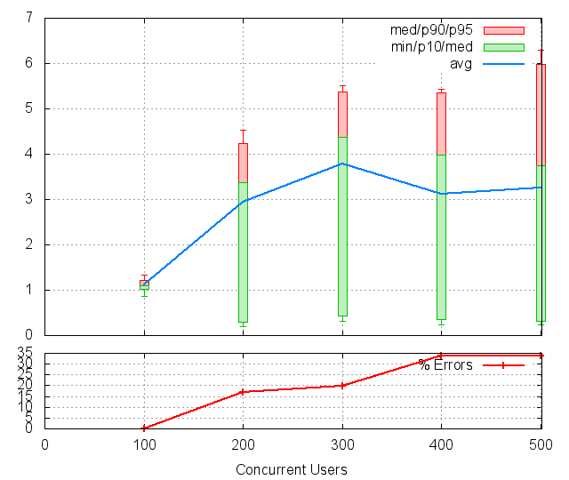
CUs Apdex* Rating TOTAL SUCCESS ERROR MIN AVG MAX P10 MED P90 P95 100 0.998 Excellent 300 300 0.00% 0.858 1.113 1.579 1.023 1.099 1.209 1.329 200 0.585 POOR 100 83 17.00% 0.192 2.943 4.976 0.301 3.370 4.235 4.531 300 0.589 POOR 186 149 19.89% 0.308 3.775 6.094 0.434 4.372 5.378 5.517 400 0.668 POOR 113 75 33.63% 0.240 3.123 5.821 0.348 3.975 5.345 5.429 500 0.623 POOR 118 78 33.90% 0.232 3.251 7.311 0.323 3.746 5.987 6.290 * Apdex 1.5
7.8 PAGE 008: Inviting user
Req: 001, post, url //createasinvite
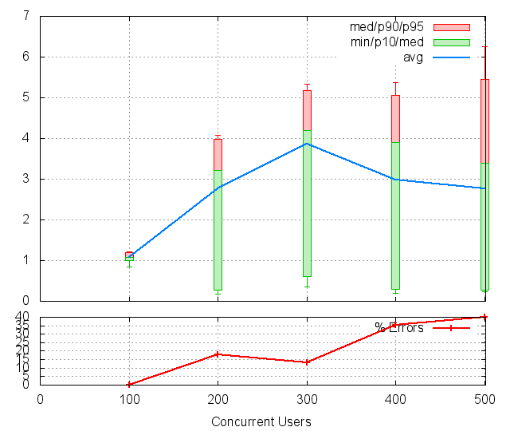
CUs Apdex* Rating TOTAL SUCCESS ERROR MIN AVG MAX P10 MED P90 P95 100 1.000 Excellent 300 300 0.00% 0.840 1.082 1.462 0.995 1.075 1.187 1.215 200 0.590 POOR 83 68 18.07% 0.180 2.771 4.438 0.268 3.217 3.976 4.086 300 0.565 POOR 153 133 13.07% 0.349 3.856 5.680 0.612 4.187 5.168 5.332 400 0.676 POOR 74 48 35.14% 0.199 2.972 5.834 0.289 3.904 5.066 5.380 500 0.660 POOR 75 45 40.00% 0.231 2.763 6.571 0.274 3.385 5.454 6.260 * Apdex 1.5
Req: 002, get, url /parties/8177
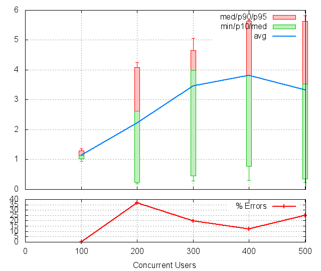
CUs Apdex* Rating TOTAL SUCCESS ERROR MIN AVG MAX P10 MED P90 P95 100 0.990 Excellent 300 300 0.00% 0.936 1.149 1.680 1.028 1.125 1.290 1.355 200 0.684 POOR 68 43 36.76% 0.192 2.225 4.494 0.236 2.618 4.085 4.245 300 0.599 POOR 142 114 19.72% 0.286 3.462 5.713 0.454 3.985 4.657 5.053 400 0.551 POOR 49 43 12.24% 0.303 3.809 6.268 0.775 3.812 5.637 5.656 500 0.602 POOR 44 33 25.00% 0.231 3.331 6.431 0.347 3.525 5.635 5.823 * Apdex 1.5
7.9 PAGE 009: Inviting user
Req: 001, post, url //createasinvite
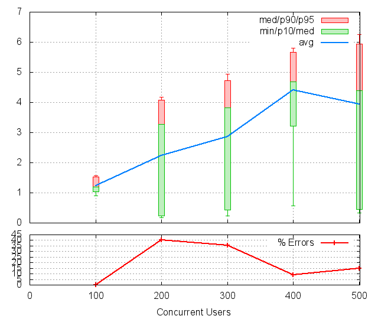
CUs Apdex* Rating TOTAL SUCCESS ERROR MIN AVG MAX P10 MED P90 P95 100 0.937 Good 300 300 0.00% 0.910 1.238 1.877 1.047 1.187 1.525 1.578 200 0.702 FAIR 42 25 40.48% 0.170 2.226 4.534 0.230 3.272 4.080 4.173 300 0.678 POOR 121 78 35.54% 0.234 2.863 5.557 0.428 3.824 4.733 4.934 400 0.523 POOR 44 40 9.09% 0.571 4.408 6.292 3.215 4.691 5.658 5.810 500 0.544 POOR 34 29 14.71% 0.328 3.934 6.340 0.448 4.399 5.950 6.251 * Apdex 1.5
Req: 002, get, url /parties/8177
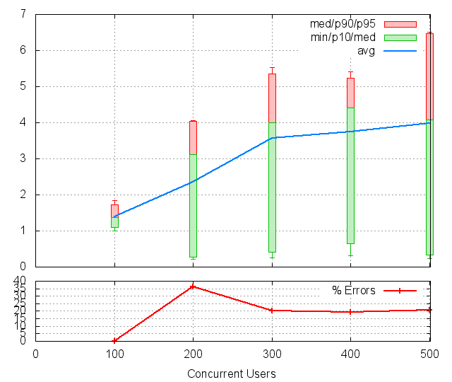
CUs Apdex* Rating TOTAL SUCCESS ERROR MIN AVG MAX P10 MED P90 P95 100 0.837 FAIR 300 300 0.00% 0.993 1.384 2.083 1.097 1.374 1.726 1.851 200 0.680 POOR 25 16 36.00% 0.217 2.357 4.100 0.266 3.113 4.029 4.050 300 0.601 POOR 79 63 20.25% 0.247 3.577 5.980 0.415 3.990 5.353 5.537 400 0.597 POOR 36 29 19.44% 0.319 3.745 5.603 0.639 4.405 5.233 5.413 500 0.483 UNACCEPTABLE 29 23 20.69% 0.229 3.975 6.608 0.338 4.076 6.476 6.501 * Apdex 1.5
7.10 PAGE 010: View index page
Req: 001, get, url //index
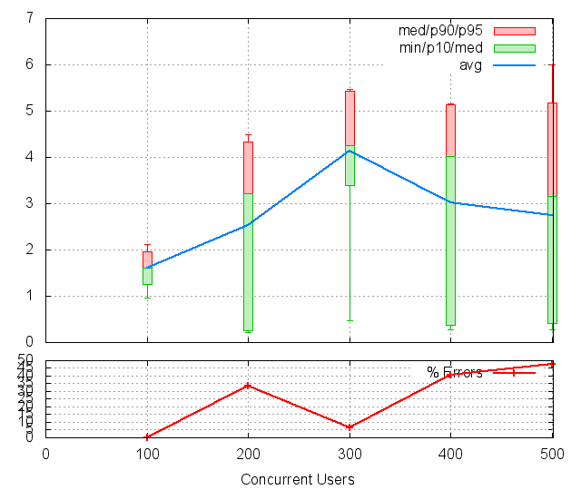
CUs Apdex* Rating TOTAL SUCCESS ERROR MIN AVG MAX P10 MED P90 P95 100 0.675 POOR 300 300 0.00% 0.967 1.604 2.401 1.250 1.613 1.965 2.111 200 0.667 POOR 15 10 33.33% 0.214 2.524 4.486 0.246 3.222 4.330 4.486 300 0.532 POOR 62 58 6.45% 0.470 4.136 5.798 3.388 4.254 5.427 5.473 400 0.704 FAIR 27 16 40.74% 0.273 3.016 5.165 0.367 4.022 5.130 5.154 500 0.696 POOR 23 12 47.83% 0.277 2.752 6.148 0.412 3.159 5.179 6.001 * Apdex 1.5
7.11 PAGE 011: Asking to join
Req: 001, post, url //join_members
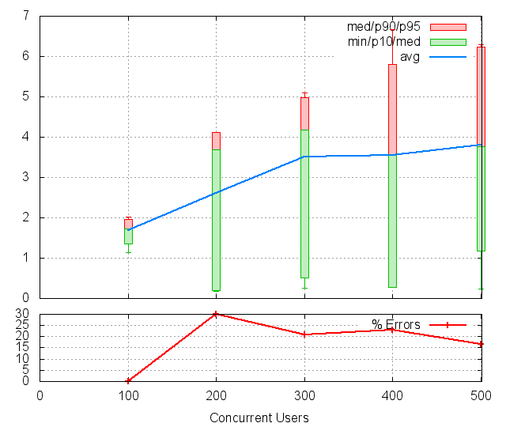
CUs Apdex* Rating TOTAL SUCCESS ERROR MIN AVG MAX P10 MED P90 P95 100 0.602 POOR 300 300 0.00% 1.140 1.692 2.313 1.362 1.723 1.956 2.023 200 0.650 POOR 10 7 30.00% 0.181 2.616 4.127 0.192 3.691 4.127 4.127 300 0.603 POOR 58 46 20.69% 0.259 3.509 5.678 0.502 4.171 4.977 5.103 400 0.577 POOR 13 10 23.08% 0.270 3.550 6.675 0.273 3.561 5.797 6.675 500 0.500 POOR 12 10 16.67% 0.240 3.811 6.294 1.177 3.761 6.240 6.294 * Apdex 1.5
Req: 002, get, url /parties
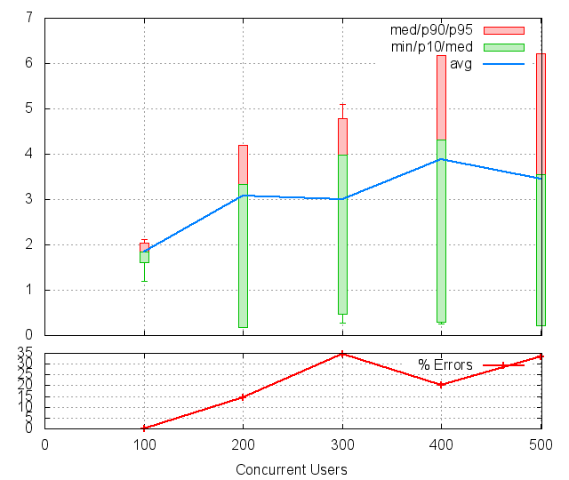
CUs Apdex* Rating TOTAL SUCCESS ERROR MIN AVG MAX P10 MED P90 P95 100 0.517 POOR 300 300 0.00% 1.191 1.839 2.282 1.602 1.850 2.036 2.120 200 0.571 POOR 7 6 14.29% 0.184 3.078 4.195 0.184 3.334 4.195 4.195 300 0.674 POOR 46 30 34.78% 0.267 2.994 5.620 0.477 3.978 4.780 5.096 400 0.550 POOR 10 8 20.00% 0.257 3.881 6.175 0.301 4.305 6.175 6.175 500 0.556 POOR 9 6 33.33% 0.222 3.460 6.214 0.222 3.549 6.214 6.214 * Apdex 1.5
7.12 PAGE 012: Asking to join
Req: 001, post, url //join_members
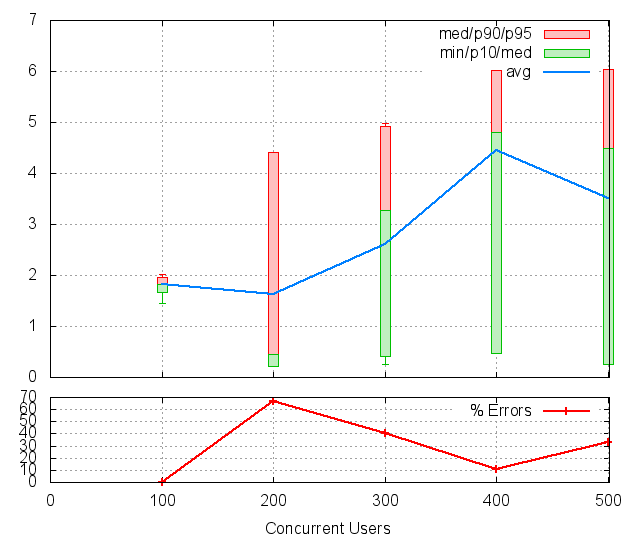
CUs Apdex* Rating TOTAL SUCCESS ERROR MIN AVG MAX P10 MED P90 P95 100 0.503 POOR 300 300 0.00% 1.457 1.822 2.248 1.663 1.825 1.966 2.028 200 0.833 FAIR 6 2 66.67% 0.213 1.631 4.414 0.213 0.446 4.414 4.414 300 0.700 FAIR 30 18 40.00% 0.261 2.599 5.813 0.410 3.274 4.925 4.974 400 0.500 POOR 9 8 11.11% 0.465 4.444 6.028 0.465 4.803 6.028 6.028 500 0.583 POOR 6 4 33.33% 0.260 3.510 6.031 0.260 4.497 6.031 6.031 * Apdex 1.5
Req: 002, get, url /parties
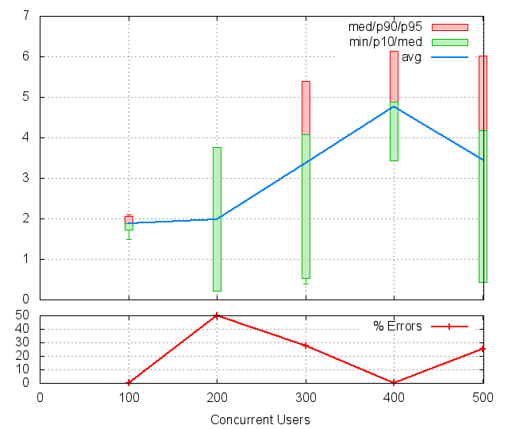
CUs Apdex* Rating TOTAL SUCCESS ERROR MIN AVG MAX P10 MED P90 P95 100 0.502 POOR 300 300 0.00% 1.483 1.884 2.226 1.733 1.874 2.053 2.096 200 0.750 FAIR 2 1 50.00% 0.209 1.990 3.771 0.209 3.771 3.771 3.771 300 0.639 POOR 18 13 27.78% 0.388 3.370 5.390 0.520 4.085 5.386 5.390 400 0.438 UNACCEPTABLE 8 8 0.00% 3.430 4.766 6.130 3.430 4.891 6.130 6.130 500 0.500 POOR 4 3 25.00% 0.430 3.448 6.010 0.430 4.171 6.010 6.010 * Apdex 1.5
7.13 PAGE 013: Asking to join
Req: 001, post, url //join_members
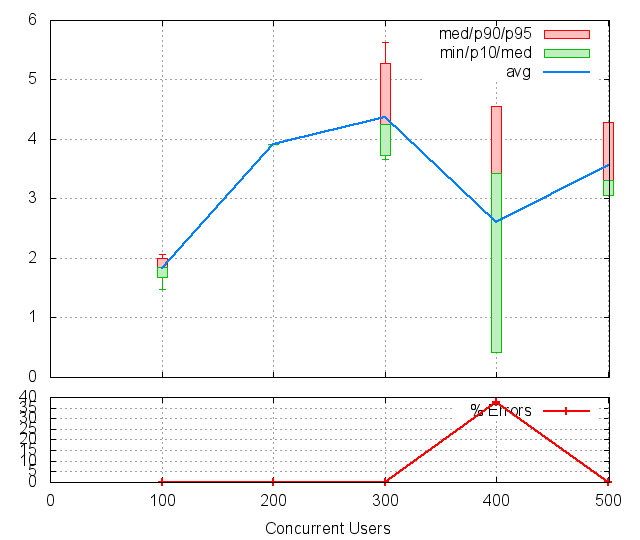
CUs Apdex* Rating TOTAL SUCCESS ERROR MIN AVG MAX P10 MED P90 P95 100 0.502 POOR 300 300 0.00% 1.478 1.837 2.172 1.685 1.844 2.008 2.067 200 0.500 POOR 1 1 0.00% 3.912 3.912 3.912 3.912 3.912 3.912 3.912 300 0.500 POOR 11 11 0.00% 3.660 4.377 5.626 3.726 4.246 5.271 5.626 400 0.688 POOR 8 5 37.50% 0.412 2.598 4.559 0.412 3.420 4.559 4.559 500 0.500 POOR 3 3 0.00% 3.067 3.557 4.289 3.067 3.314 4.289 4.289 * Apdex 1.5
Req: 002, get, url /parties
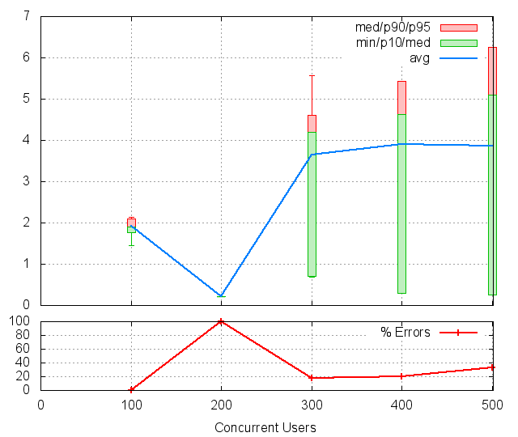
CUs Apdex* Rating TOTAL SUCCESS ERROR MIN AVG MAX P10 MED P90 P95 100 0.502 POOR 300 300 0.00% 1.459 1.919 2.271 1.756 1.910 2.098 2.144 200 1.000 Excellent 1 0 100.00% 0.221 0.221 0.221 0.221 0.221 0.221 0.221 300 0.591 POOR 11 9 18.18% 0.691 3.644 5.571 0.706 4.204 4.617 5.571 400 0.600 POOR 5 4 20.00% 0.290 3.894 5.438 0.290 4.625 5.438 5.438 500 0.500 POOR 3 2 33.33% 0.246 3.867 6.263 0.246 5.091 6.263 6.263 * Apdex 1.5
8 Failures and Errors
8.1 Failures
11388 time(s), code: 503:
No traceback.
9 Definitions
CUs: Concurrent users or number of concurrent threads executing tests.
Request: a single GET/POST/redirect/xmlrpc request.
Page: a request with redirects and resource links (image, css, js) for an html page.
STPS: Successful tests per second.
SPPS: Successful pages per second.
RPS: Requests per second, successful or not.
maxSPPS: Maximum SPPS during the cycle.
maxRPS: Maximum RPS during the cycle.
MIN: Minimum response time for a page or request.
AVG: Average response time for a page or request.
MAX: Maximmum response time for a page or request.
P10: 10th percentile, response time where 10 percent of pages or requests are delivered.
MED: Median or 50th percentile, response time where half of pages or requests are delivered.
P90: 90th percentile, response time where 90 percent of pages or requests are delivered.
P95: 95th percentile, response time where 95 percent of pages or requests are delivered.
Apdex T: Application Performance Index, this is a numerical measure of user satisfaction, it is based on three zones of application responsiveness:
Satisfied: The user is fully productive. This represents the time value (T seconds) below which users are not impeded by application response time.
Tolerating: The user notices performance lagging within responses greater than T, but continues the process.
Frustrated: Performance with a response time greater than 4*T seconds is unacceptable, and users may abandon the process.
By default T is set to 1.5s this means that response time between 0 and 1.5s the user is fully productive, between 1.5 and 6s the responsivness is tolerating and above 6s the user is frustrated.
The Apdex score converts many measurements into one number on a uniform scale of 0-to-1 (0 = no users satisfied, 1 = all users satisfied).
Visit http://www.apdex.org/ for more information.
Rating: To ease interpretation the Apdex score is also represented as a rating:
- U for UNACCEPTABLE represented in gray for a score between 0 and 0.5
- P for POOR represented in red for a score between 0.5 and 0.7
- F for FAIR represented in yellow for a score between 0.7 and 0.85
- G for Good represented in green for a score between 0.85 and 0.94
- E for Excellent represented in blue for a score between 0.94 and 1.
Report generated with FunkLoad 1.16.1, more information available on the FunkLoad site.